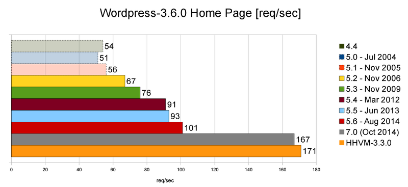
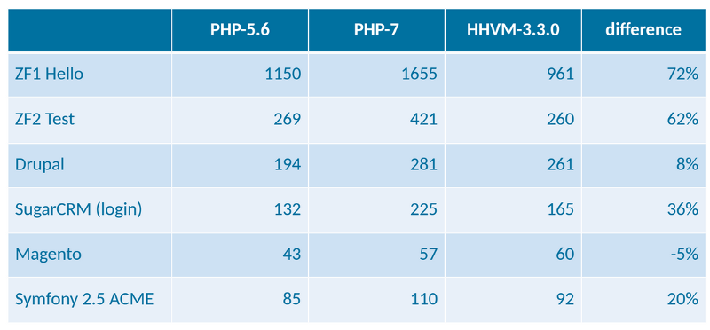

PHP 7: upcoming features
by Enrico Zimuel - Twitter: @ezimuel
Senior Sofware Engineer, Zend Technologies Ltd
PUG Torino, 29th April 2015
About me
 Professional Developer since 1996. Senior Software Engineer at Zend Technologies, since 2008. Research in computer science at the Informatics Institute of Amsterdam University. Open source contributor and co-author of Apigility and Zend Framework. Co-author of the Italian books PHP Best Practices and Javascript Best Practices. Co-founder of PUG Torino (Italy).
Professional Developer since 1996. Senior Software Engineer at Zend Technologies, since 2008. Research in computer science at the Informatics Institute of Amsterdam University. Open source contributor and co-author of Apigility and Zend Framework. Co-author of the Italian books PHP Best Practices and Javascript Best Practices. Co-founder of PUG Torino (Italy).
PHP 7
Release scheduled for October 2015
Last major was PHP 5, 13 July 2004 (11 years ago!)
Last stable release is 5.6.8 (16 April 2015)
PHP 6 ?
Unicode support at the core language level
Not released, project is abandoned
PHP deadlines
| Version | Release | Supported until |
| 5.3 | 30 June 2009 | 14 August 2014 |
| 5.4 | 1 March 2012 | September 2015 |
| 5.5 | 20 June 2013 | June 2016 |
| 5.6 | 28 August 2014 | August 2017 |
| 7 | October 2015 | October 2018 |
PHP7 in a nutshell
- Great performance (thanks to PHPNG)
- Return Type Declarations
- Scalar Type Declarations
- Anonymous Classes
- Remove PHP 4 Constructors
- Combined Comparison (Spaceship) Operator
- Exceptions in the engine
- Constructor behaviour of internal classes
Performance
PHPNG, PHP Next Generation
Project by Dmitry Stogov (Zend)
New data structure management in the PHP engine
Great performance improvement!
Benchmark
$a = array();
for ($i = 0; $i < 1000000; $i++) {
$a[$i] = array("hello");
}
echo memory_get_usage(true);
| PHP 5.6 | PHP 7 | |
| Memory Usage | 428 MB | 33 MB |
| Execution time | 0.49 sec | 0.06 sec |
PHP language

Wordpress
Frameworks/Apps
* values are req/sec
Return Type Declarations
function foo(): array {
return [];
}
function bar(): DateTime {
return null; // invalid
}
For more information read PHP RFC
Scalar Type Declarations
declare(strict_types=1);
function sendHttpStatus(int $statusCode, string $message) {
header('HTTP/1.0 ' .$statusCode. ' ' .$message);
}
sendHttpStatus(404, "File Not Found"); // ok
sendHttpStatus("403", "OK"); // fatal error
function add(float $a, float $b): float {
return $a + $b;
}
add(1, 2); // float(3)
For more information read PHP RFC
Anonymous Classes
/* return an anonymous class */
return new class($controller) implements Page {
public function __construct($controller) {
/* ... */
}
/* ... */
};
class Foo {}
$child = new class extends Foo {};
var_dump($child instanceof Foo); // true
For more information read PHP RFC
Combined Comparison Operator
Spaceship operator: (exprA) <=> (exprB)
0 if exprA == exprB, 1 if exprA > exprB, -1 if exprA < exprB
echo 1 <=> 1; // 0
echo 1 <=> 2; // -1
echo 2 <=> 1; // 1
echo "a" <=> "a"; // 0
echo "a" <=> "b"; // -1
echo "b" <=> "a"; // 1
For more information read PHP RFC
Exceptions in the engine
EngineException to manage exception from PHP engine
function call_method($obj) {
$obj->method();
}
try {
call_method(null); // oops!
} catch (EngineException $e) {
echo "Exception: {$e->getMessage()}\n";
}
For more information read PHP RFC
Constructor behaviour of internal classes
This RFC proposes setting a standard that internal classes should either return a valid instance of the class or throw an exception
$mf = new MessageFormatter('en_US', '{incorrect}');
if ($mf === null) {
echo "Surprise!";
}
For more information read PHP RFC
Much more...
- 64 bit platform improvements for string length and integer
- Uniform Variable Syntax
- Fix list() behavior inconsistency
- Filtered unserialize()
- Fast Parameter Parsing API
- ...
Check the RFC Wiki of PHP for the complete list
Some resource
- Davey Shafik, What to Expect When You're Expecting: PHP 7, Engine Yard Blog
- Bruno Skvorc, The PHP 7 Revolution: Return Types and Removed Artifacts, Sitepoint
- 5 THINGS YOU MUST KNOW ABOUT PHP7, Infographic by Zend
- Phil Sturgeon, PHP 7 Feature Freeze
- Dan Miller, Comparing the PHP 7 and Hack Type Systems, Miller's website
- PHPNG Implementation Details, php.net
- Dmitry Stogov, PHPNG a New Core for PHP7, ZendCond 2014
- Enrico Zimuel, Install PHP 7 on Ubuntu 14.04, Zimuel's website
- PHP 7: anticipazioni e nuove feature, (in Italian), Neen Blog
Thanks!
More information Wiki RFC PHP
Contact me: enrico [at] zend.com
Follow me: @ezimuel

This work is licensed under a
Creative Commons Attribution-ShareAlike 3.0 Unported License.
I used reveal.js to make this presentation.